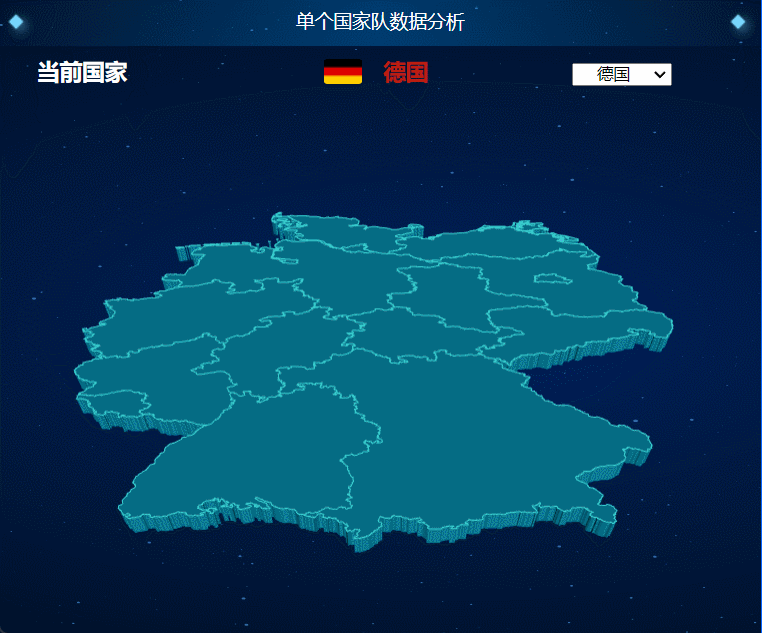
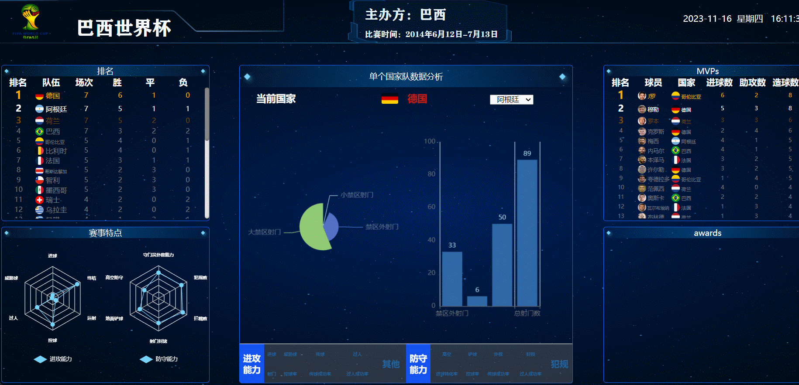
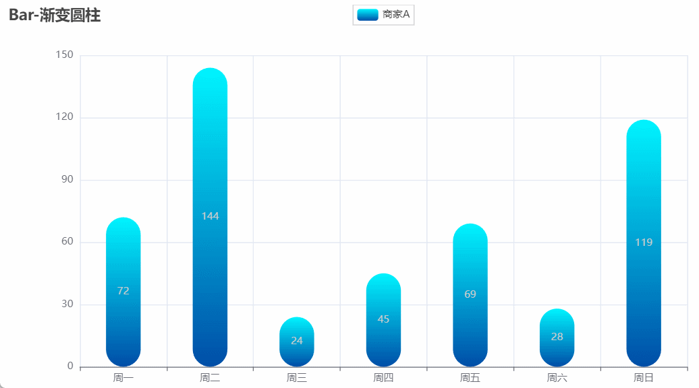

Using pyecharts and data dashboards,
we can create visualizations that showcase the characteristics
of each team in the last three World Cups based on their unique data features.
Comprehensively analyzing the competition data of 96 participating countries from the last 3 World Cups,
revealing the trends in tactical development and team changes within the World Cup.

Conducting fine-grained analysis on each
national team.

Data panel system displays all data.

Embedding echarts tables provides a smooth interactive
experience.
Source of inspiration:
Visual large screen and interactive charts
Qatar World Cup visualization large screen
Echarts large screen data visualization
Dedicated To
GOAT: Leo Messi
You have to fight to reach your dream.
You have to
sacrifice and work hard for it.
Sometimes you have
to accept you can't win all the time.
National Team: Argentina
It is a source of great pride for all Argentines to witness the great talent and passion
that this team demonstrates in every match.
With their exceptional play and fighting spirit,
the Argentina national team has once again shown why they are one of the best teams in the world.
Vamos Argentina! May the successes continue!